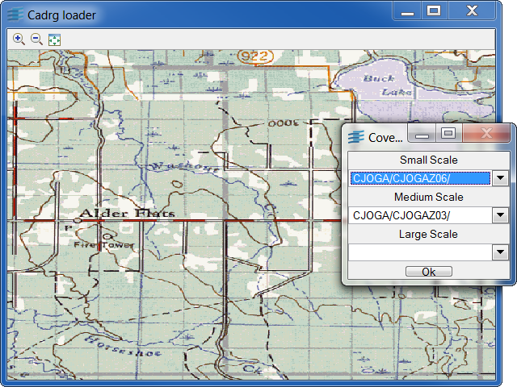

cadrgviewCADRG Viewer with Load-On-Demand implementation.
This CADRG Viewer shows the Load-On-Demand implementation for the CADRG format in Rogue Wave Views Maps.
A.TOC and is placed
in the main directory of a CADRG database, which
is called rpf.
The specifications of the CADRG format are public, and can be
downloaded from the following URL:
http://earth-info.nga.mil/publications/specs
Full samples of CADRG databases can be downloaded from the
Geospatial Engine.
Basically, a CADRG database covers an area with scanned maps of
various scales. It is composed of a main directory that includes a table of
contents file, called A.TOC, which can be read with an
IlvCADRGTocReader. This main directory is divided into subdirectories,
each one corresponding to a specific coverage. These subdirectories contain the
CADRG frames that make up the coverage. These frames can be read
with an IlvCADRGFrameReader.
To automatically read a CADRG coverage using the Rogue Wave Views
load-on-demand mechanism, you can use an IlvCADRGLayer.
IlvCADRGLayerIlvCADRGFrameReader